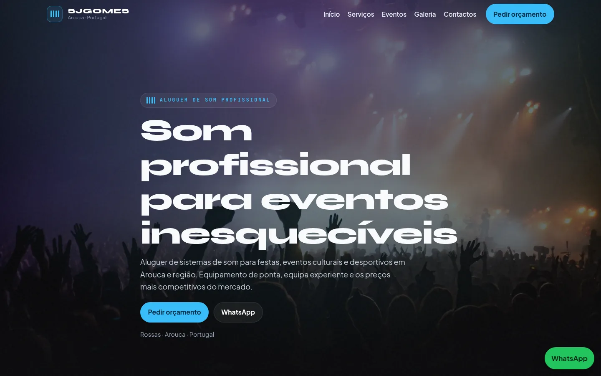
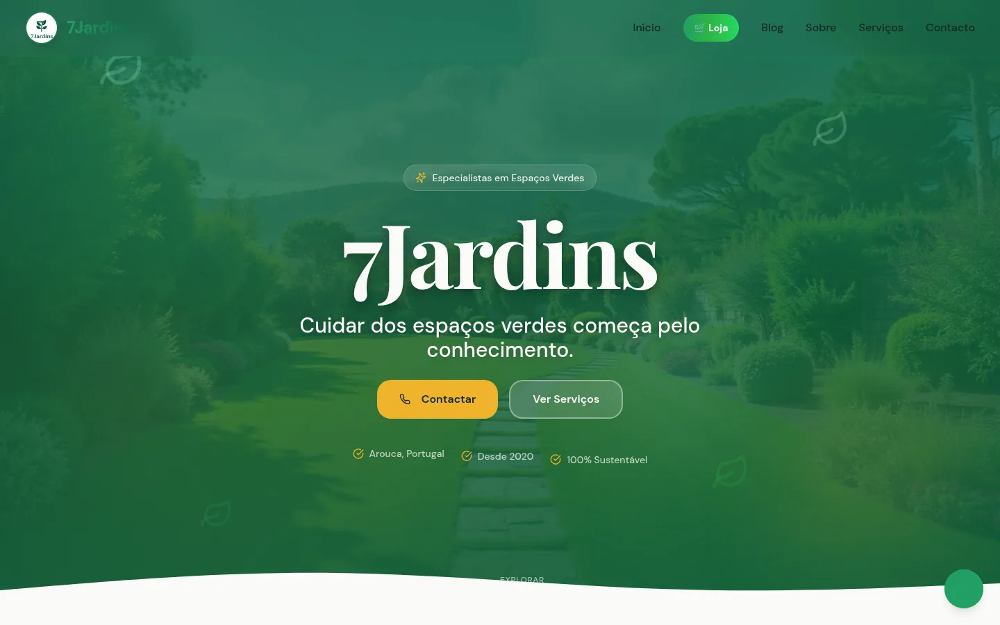
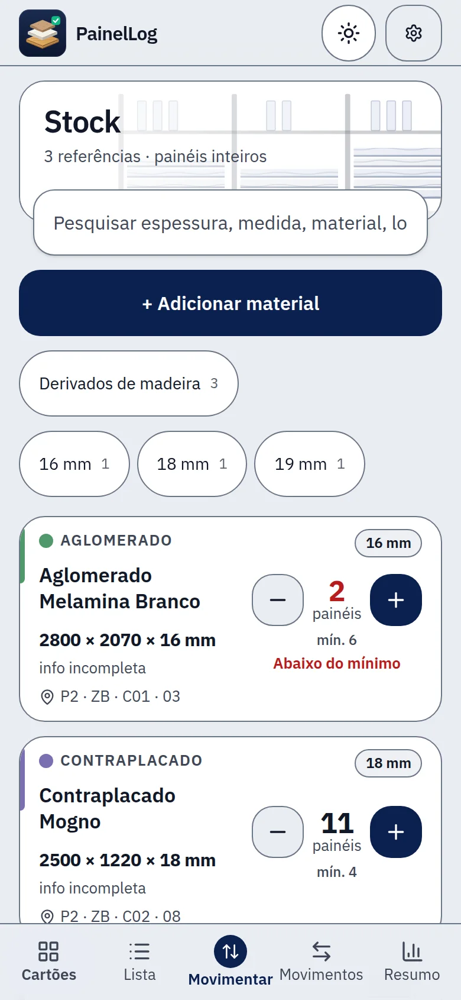
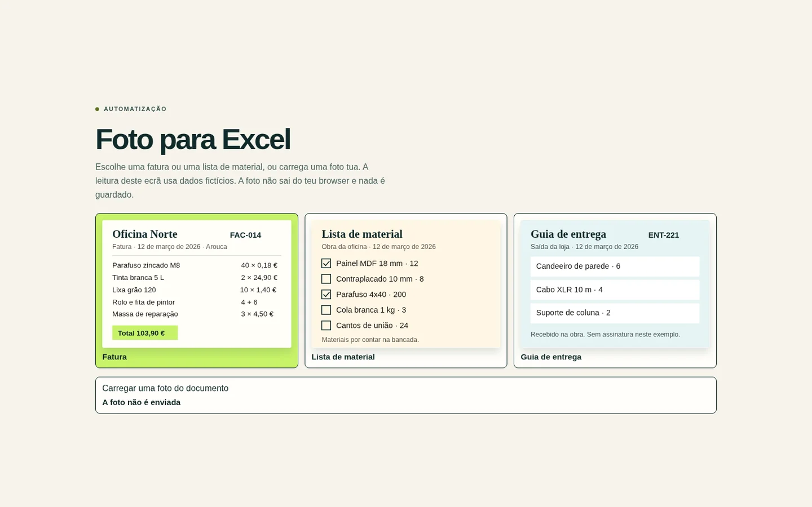
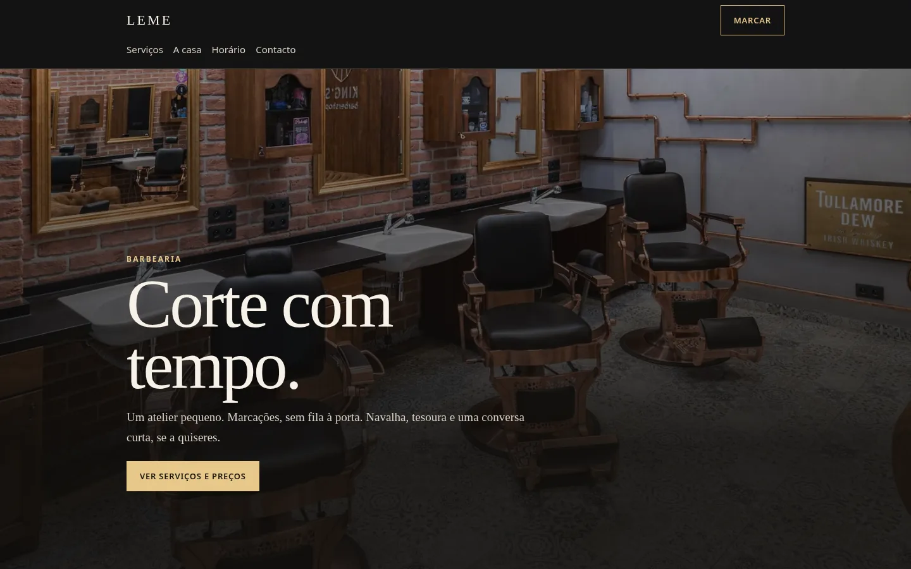
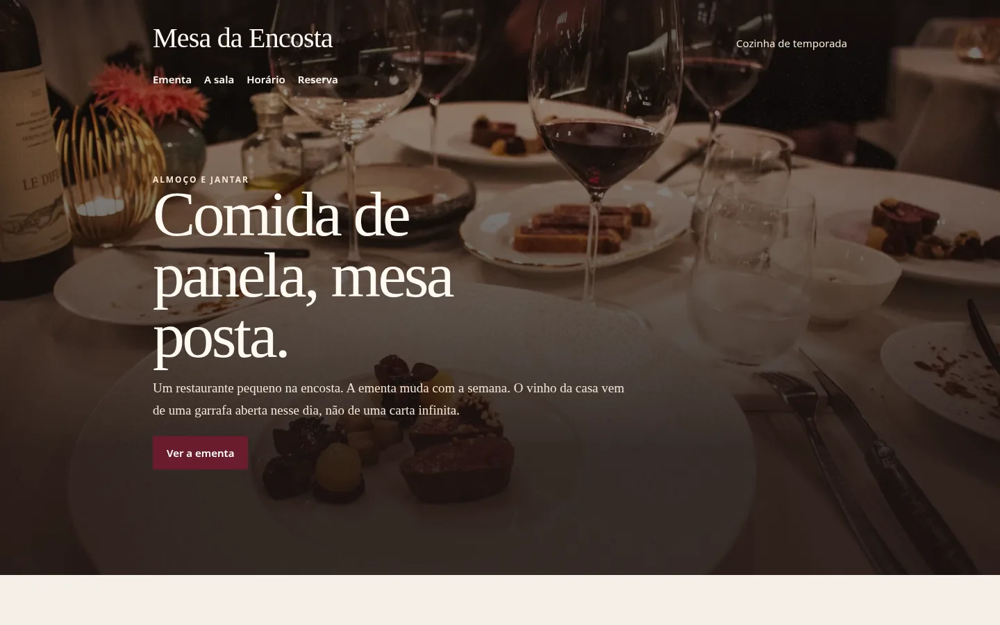
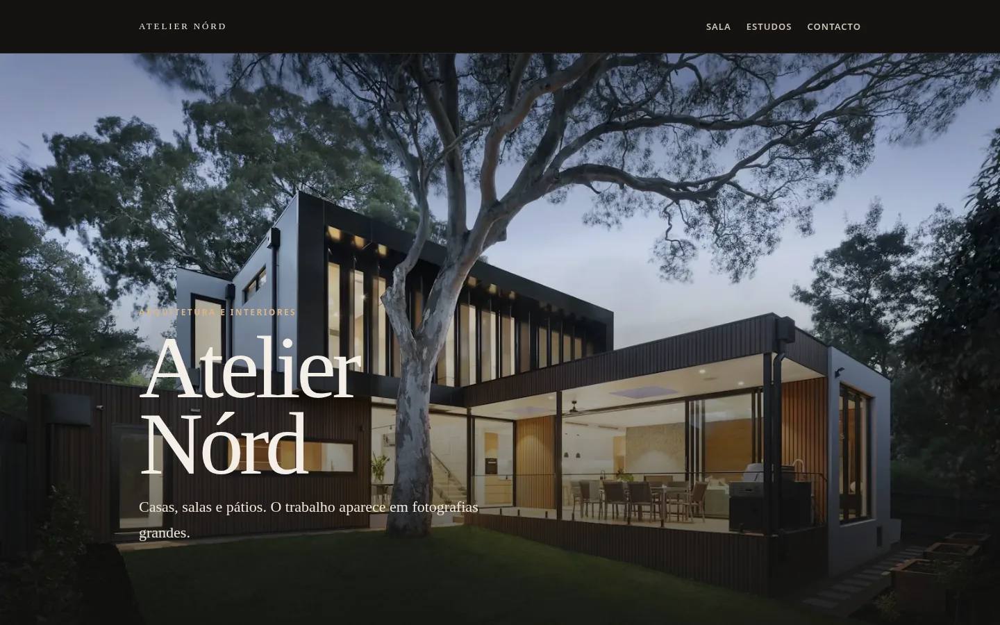
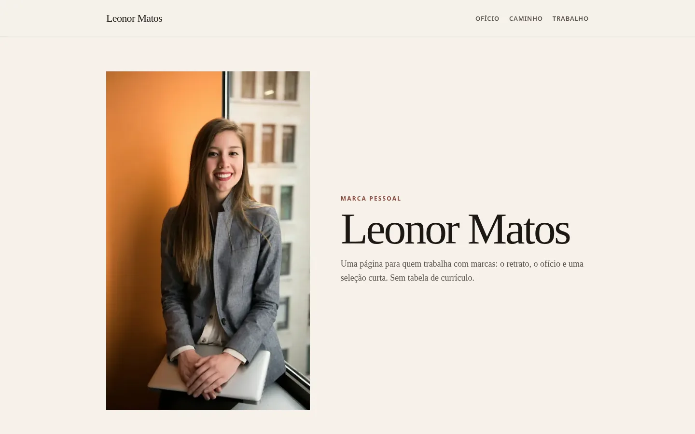
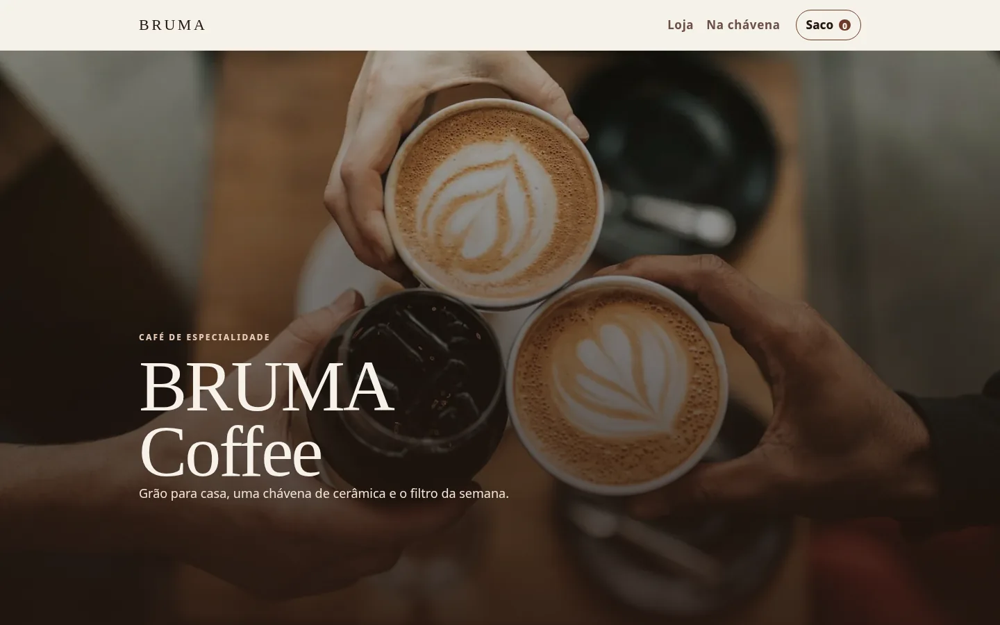

No ar

SjGomes — Sistemas de som
Aluguer de som para eventos, com o equipamento à vista e um caminho claro para marcar.
Ver o sitePortefólio
Mostro aqui sites que já estão no ar, aplicações em desenvolvimento e conceitos de design.
Todos · 9 trabalhos

Aluguer de som para eventos, com o equipamento à vista e um caminho claro para marcar.
Ver o site
Quem procura jardinagem vê os serviços de exterior e pede orçamento sem adivinhar o que a empresa faz.
Ver o site
O stock de painéis num painel no telemóvel, sem folhas de Excel.
Ainda em desenvolvimento. O ecrã mostra dados de exemplo, não dados reais.
Ver a página
Uma foto de uma fatura ou de uma lista de material passa a tabela, pronta a descarregar.
Ver a aplicação
Serviços, preços e marcação ficam visíveis, e o telefone deixa de ser a única forma de reservar.
Conceito de design, não é um cliente.
Ver o conceito
Ementa, horário e reserva à mão de quem já está a procurar onde comer.
Conceito de design, não é um cliente.
Ver o conceito
Fotografia grande do estúdio, para o visitante perceber o ofício antes de escrever.
Conceito de design, não é um cliente.
Ver o conceito
Retrato e áreas de trabalho numa página curta, para quem quer conhecer a pessoa e o ofício.
Conceito de design, não é um cliente.
Ver o conceito
Os produtos da semana e o pedido pelo WhatsApp ficam na mesma página, sem um catálogo solto.
Conceito de design, não é um cliente.
Ver o conceitoOu escreve para sjgomesarouca@gmail.com.
O PainelLog nasceu de um problema real numa oficina. Se tens uma ideia para facilitar o teu trabalho ou o da tua empresa, fala comigo. Vemos juntos se faz sentido e quanto custa pôr de pé.
Falar sobre a minha ideia